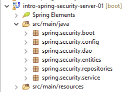
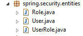
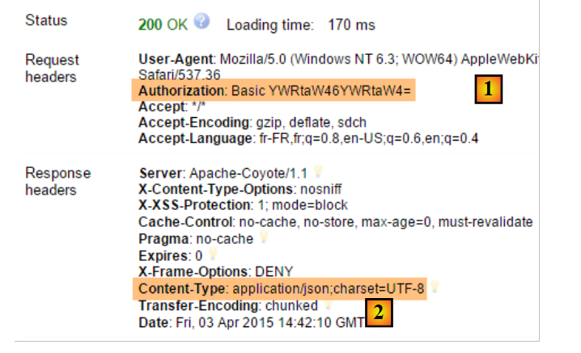
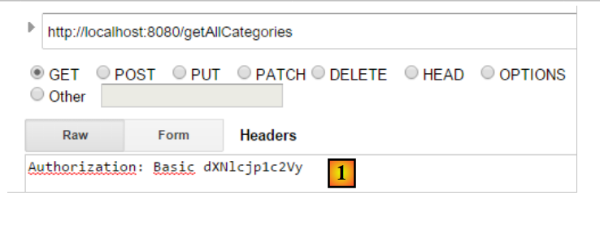
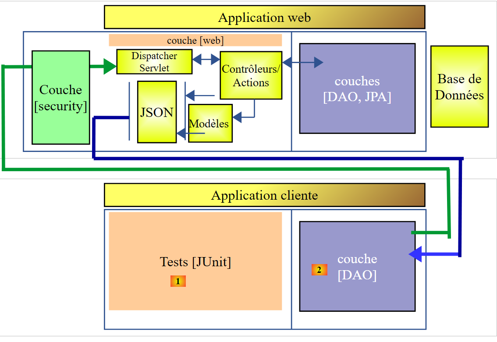

16. [Cours]: تأمين الوصول إلى خدمة ويب باستخدام Spring Security
الكلمات المفتاحية: بنية متعددة الطبقات، Spring، حقن التبعيات، خدمة ويب / jSON آمنة، عميل / خادم
16.1. Support
 |  |
ستجد مشاريع هذا الفصل في المجلد [support / chap-16]. يستخدم البرنامج النصي SQL لإنشاء قاعدة البيانات اللازمة للاختبارات.
16.2. مكانة Spring Security في تطبيق الويب
لنحدد مكان Spring Security في تطوير تطبيق ويب. في أغلب الأحيان، سيتم بناء هذا التطبيق على بنية متعددة الطبقات مثل التالية:
 |
- لا تسمح الطبقة [Spring Security] بالوصول إلى الطبقة [web] إلا للمستخدمين المصرح لهم.
16.3. دليل تعليمي حول Spring Security
سنقوم مرة أخرى باستيراد دليل Spring باتباع الخطوات من 1 إلى 3 أدناه:
 |
 |
يتكون المشروع من العناصر التالية:
- في المجلد [templates]، نجد صفحات HTML الخاصة بالمشروع؛
- [Application]: هي الفئة القابلة للتنفيذ للمشروع؛
- [MvcConfig]: هي فئة تكوين Spring MVC؛
- [WebSecurityConfig]: هي فئة تكوين Spring Security؛
16.3.1. تكوين Maven
المشروع [3] هو مشروع Maven. دعونا نلقي نظرة على ملفه [pom.xml] لمعرفة تبعياته:
<?xml version="1.0" encoding="UTF-8"?>
<project xmlns="http://maven.apache.org/POM/4.0.0" xmlns:xsi="http://www.w3.org/2001/XMLSchema-instance"
xsi:schemaLocation="http://maven.apache.org/POM/4.0.0 http://maven.apache.org/xsd/maven-4.0.0.xsd">
<modelVersion>4.0.0</modelVersion>
<groupId>org.springframework</groupId>
<artifactId>gs-securing-web</artifactId>
<version>0.1.0</version>
<parent>
<groupId>org.springframework.boot</groupId>
<artifactId>spring-boot-starter-parent</artifactId>
<version>1.2.3.RELEASE</version>
</parent>
<dependencies>
<dependency>
<groupId>org.springframework.boot</groupId>
<artifactId>spring-boot-starter-thymeleaf</artifactId>
</dependency>
<!-- tag::security[] -->
<dependency>
<groupId>org.springframework.boot</groupId>
<artifactId>spring-boot-starter-security</artifactId>
</dependency>
<!-- end::security[] -->
</dependencies>
<properties>
<start-class>hello.Application</start-class>
</properties>
<build>
<plugins>
<plugin>
<groupId>org.springframework.boot</groupId>
<artifactId>spring-boot-maven-plugin</artifactId>
</plugin>
</plugins>
</build>
</project>
- الأسطر 10-14: المشروع هو مشروع Spring Boot؛
- الأسطر 17-20: التبعية لإطار العمل [Thymeleaf]؛
- الأسطر 22-25: التبعية لإطار العمل Spring Security؛
16.3.2. طرق عرض Thymeleaf
 |
طريقة العرض [home.html] هي كما يلي:
 |
<!DOCTYPE html>
<html xmlns="http://www.w3.org/1999/xhtml"
xmlns:th="http://www.thymeleaf.org"
xmlns:sec="http://www.thymeleaf.org/thymeleaf-extras-springsecurity3">
<head>
<title>Spring Security Example</title>
</head>
<body>
<h1>Welcome!</h1>
<p>
Click <a th:href="@{/hello}">here</a> to see a greeting.
</p>
</body>
</html>
- السطر 12: سيؤدي السمة [th:href="@{/hello}"] إلى إنشاء السمة [href] لعلامة [<a>]. ستولد القيمة [@{/hello}] المسار [<context>/hello] حيث [context] هو سياق تطبيق الويب؛
الرمز HTML الذي تم إنشاؤه هو التالي:
<!DOCTYPE html>
<html xmlns="http://www.w3.org/1999/xhtml" xmlns:sec="http://www.thymeleaf.org/thymeleaf-extras-springsecurity3">
<head>
<title>Spring Security Example</title>
</head>
<body>
<h1>Welcome!</h1>
<p>
Click
<a href="/hello">here</a>
to see a greeting.
</p>
</body>
</html>
الطريقة [hello.html] هي كما يلي:
 |
<!DOCTYPE html>
<html xmlns="http://www.w3.org/1999/xhtml"
xmlns:th="http://www.thymeleaf.org"
xmlns:sec="http://www.thymeleaf.org/thymeleaf-extras-springsecurity3">
<head>
<title>Hello World!</title>
</head>
<body>
<h1 th:inline="text">Hello [[${#httpServletRequest.remoteUser}]]!</h1>
<form th:action="@{/logout}" method="post">
<input type="submit" value="Sign Out" />
</form>
</body>
</html>
- السطر 9: سيقوم السمة [th:inline="text"] بإنشاء نص العلامة [<h1>]. يحتوي هذا النص على تعبير $ يجب تقييمه. العنصر [[${#httpServletRequest.remoteUser}]] هو قيمة السمة [RemoteUser] للاستعلام HTTP الحالي. وهو اسم المستخدم المتصل؛
- السطر 10: نموذج HTML. سيقوم السمة [th:action="@{/logout}"] بإنشاء السمة [action] لعلامة [form]. ستقوم القيمة [@{/logout}] بإنشاء المسار [<context>/logout] حيث [context] هو سياق تطبيق الويب؛
الرمز HTML الذي تم إنشاؤه هو التالي:
<!DOCTYPE html>
<html xmlns="http://www.w3.org/1999/xhtml" xmlns:sec="http://www.thymeleaf.org/thymeleaf-extras-springsecurity3">
<head>
<title>Hello World!</title>
</head>
<body>
<h1>Hello user!</h1>
<form method="post" action="/logout">
<input type="submit" value="Sign Out" />
<input type="hidden" name="_csrf" value="b152e5b9-d1a4-4492-b89d-b733fe521c91" />
</form>
</body>
</html>
- السطر 8: ترجمة Hello [[${#httpServletRequest.remoteUser}]]!؛
- السطر 9: ترجمة @{/logout}؛
- السطر 11: حقل مخفي يسمى (السمة name) _csrf؛
الطريقة [login.html] هي كما يلي:
 |
<!DOCTYPE html>
<html xmlns="http://www.w3.org/1999/xhtml"
xmlns:th="http://www.thymeleaf.org"
xmlns:sec="http://www.thymeleaf.org/thymeleaf-extras-springsecurity3">
<head>
<title>Spring Security Example</title>
</head>
<body>
<div th:if="${param.error}">Invalid username and password.</div>
<div th:if="${param.logout}">You have been logged out.</div>
<form th:action="@{/login}" method="post">
<div>
<label> User Name : <input type="text" name="username" />
</label>
</div>
<div>
<label> Password: <input type="password" name="password" />
</label>
</div>
<div>
<input type="submit" value="Sign In" />
</div>
</form>
</body>
</html>
- السطر 9: السمة [th:if="${param.error}"] تجعل علامة <div> لا تُنشأ إلا إذا كانت السمة URL التي تعرض صفحة تسجيل الدخول تحتوي على المعلمة [error] (http://context/login?error)؛
- السطر 10: السمة [th:if="${param.logout}"] تجعل العلامة <div> لا تُنشأ إلا إذا كان URL الذي يعرض صفحة تسجيل الدخول يحتوي على المعلمة [logout] (http://context/login?logout)؛
- الأسطر 11-23: نموذج HTML؛
- السطر 11: سيتم إرسال النموذج إلى URL [<context>/login] حيث <context> هو سياق تطبيق الويب؛
- السطر 13: حقل إدخال باسم [username]؛
- السطر 17: حقل إدخال باسم [password]؛
الرمز HTML الذي تم إنشاؤه هو التالي:
<!DOCTYPE html>
<html xmlns="http://www.w3.org/1999/xhtml" xmlns:sec="http://www.thymeleaf.org/thymeleaf-extras-springsecurity3">
<head>
<title>Spring Security Example </title>
</head>
<body>
<div>
You have been logged out.
</div>
<form method="post" action="/login">
<div>
<label>
User Name :
<input type="text" name="username" />
</label>
</div>
<div>
<label>
Password:
<input type="password" name="password" />
</label>
</div>
<div>
<input type="submit" value="Sign In" />
</div>
<input type="hidden" name="_csrf" value="ef809b0a-88b4-4db9-bc53-342216b77632" />
</form>
</body>
</html>
يُلاحظ في السطر 28 أن Thymeleaf أضاف حقلًا مخفيًا باسم [_csrf].
16.3.3. تكوين Spring MVC
 |
تقوم الفئة [MvcConfig] بتكوين إطار عمل Spring MVC:
package hello;
import org.springframework.context.annotation.Configuration;
import org.springframework.web.servlet.config.annotation.ViewControllerRegistry;
import org.springframework.web.servlet.config.annotation.WebMvcConfigurerAdapter;
@Configuration
public class MvcConfig extends WebMvcConfigurerAdapter {
@Override
public void addViewControllers(ViewControllerRegistry registry) {
registry.addViewController("/home").setViewName("home");
registry.addViewController("/").setViewName("home");
registry.addViewController("/hello").setViewName("hello");
registry.addViewController("/login").setViewName("login");
}
}
- السطر 7: التعليق التوضيحي [@Configuration] يجعل من الفئة [MvcConfig] فئة تكوين؛
- السطر 8: الفئة [MvcConfig] توسع الفئة [WebMvcConfigurerAdapter] لإعادة تعريف بعض الطرق؛
- السطر 10: إعادة تعريف طريقة من الفئة الأصلية؛
- الأسطر 11-16: تسمح الطريقة [addViewControllers] بربط URL بعروض HTML. يتم إجراء الروابط التالية:
عرض | |
/templates/home.html | |
/templates/hello.html | |
/templates/login.html |
اللاحقة [html] والمجلد [templates] هما القيمتان الافتراضيتان اللتان يستخدمهما Thymeleaf. ويمكن تغييرهما عن طريق التهيئة. يجب أن يكون المجلد [templates] في جذر مسار فئة المشروع:
 |
فيما سبق [1]، المجلدان [java] و [resources] هما مجلدان مصدر (source folders). وهذا يعني أن محتوياتهما ستكون في جذر مسار فئات المشروع. لذلك في [2]، ستكون المجلدات [hello] و [templates] في جذر مسار الفئات.
16.3.4. تكوين Spring Security
 |
تقوم الفئة [WebSecurityConfig] بتكوين إطار عمل Spring Security:
package hello;
import org.springframework.context.annotation.Configuration;
import org.springframework.security.config.annotation.authentication.builders.AuthenticationManagerBuilder;
import org.springframework.security.config.annotation.web.builders.HttpSecurity;
import org.springframework.security.config.annotation.web.configuration.WebSecurityConfigurerAdapter;
import org.springframework.security.config.annotation.web.servlet.configuration.EnableWebMvcSecurity;
@Configuration
@EnableWebMvcSecurity
public class WebSecurityConfig extends WebSecurityConfigurerAdapter {
@Override
protected void configure(HttpSecurity http) throws Exception {
http.authorizeRequests().antMatchers("/", "/home").permitAll().anyRequest().authenticated();
http.formLogin().loginPage("/login").permitAll().and().logout().permitAll();
}
@Override
protected void configure(AuthenticationManagerBuilder auth) throws Exception {
auth.inMemoryAuthentication().withUser("user").password("password").roles("USER");
}
}
- السطر 9: التعليق التوضيحي [@Configuration] يجعل من الفئة [WebSecurityConfig] فئة تكوين؛
- السطر 10: التعليق التوضيحي [@EnableWebSecurity] يجعل من الفئة [WebSecurityConfig] فئة تكوين لـ Spring Security؛
- السطر 11: الفئة [WebSecurity] توسع الفئة [WebSecurityConfigurerAdapter] لإعادة تعريف بعض الطرق؛
- السطر 12: إعادة تعريف طريقة من الفئة الأصلية؛
- الأسطر 13-16: يتم إعادة تعريف الطريقة [configure(HttpSecurity http)] لتحديد حقوق الوصول إلى مختلف URL في التطبيق؛
- السطر 14: تسمح الطريقة [http.authorizeRequests()] بربط URL بحقوق الوصول. يتم إجراء الروابط التالية:
قاعدة | رمز | |
الوصول دون مصادقة | | |
الوصول بعد المصادقة فقط |
- السطر 15: يحدد طريقة المصادقة. تتم المصادقة عبر نموذج URL [/login] متاح للجميع [http.formLogin().loginPage("/login").permitAll()]. كما أن تسجيل الخروج (logout) متاح للجميع؛
- الأسطر 19-21: تعيد تعريف الطريقة [configure(AuthenticationManagerBuilder auth)] التي تدير المستخدمين؛
- السطر 20: تتم المصادقة باستخدام مستخدمين محددين بشكل "ثابت" [auth.inMemoryAuthentication()]. يتم تعريف المستخدم هنا باستخدام اسم المستخدم [user] وكلمة المرور [password] والدور [USER]. يمكن منح نفس الحقوق للمستخدمين الذين لديهم نفس الدور؛
16.3.5. فئة قابلة للتنفيذ
 |
الفئة [Application] هي كما يلي:
package hello;
import org.springframework.boot.autoconfigure.EnableAutoConfiguration;
import org.springframework.boot.SpringApplication;
import org.springframework.context.annotation.ComponentScan;
import org.springframework.context.annotation.Configuration;
@EnableAutoConfiguration
@Configuration
@ComponentScan
public class Application {
public static void main(String[] args) throws Throwable {
SpringApplication.run(Application.class, args);
}
}
- السطر 8: تطلب التعليقة التوضيحية [@EnableAutoConfiguration] من Spring Boot (السطر 3) إجراء التكوين الذي لم يقم المطور بإجرائه صراحةً؛
- السطر 9: يجعل من الفئة [Application] فئة تكوين Spring؛
- السطر 10: يطلب فحص مجلد الفئة [Application] للبحث عن مكونات Spring. سيتم اكتشاف الفئتين [MvcConfig] و [WebSecurityConfig] لأنهما تحتويان على التعليق التوضيحي [@Configuration]؛
- السطر 13: الطريقة [main] للفئة القابلة للتنفيذ؛
- السطر 14: يتم تنفيذ الطريقة الثابتة [SpringApplication.run] مع فئة التكوين [Application] كمعلمة. لقد سبق أن صادفنا هذه العملية ونعلم أن خادم Tomcat المضمن في تبعيات Maven للمشروع سيتم تشغيله ونشر المشروع عليه. وقد رأينا أن أربعة URL كانت تدار بواسطة [/, /home, /login, /hello] وأن بعضها كان محميًا بحقوق الوصول.
16.3.6. اختبارات التطبيق
لنبدأ بطلب URL [/] الذي يعد أحد ملفات URL الأربعة المقبولة. وهو مرتبط بعرض [/templates/home.html]:
 |
يمكن للجميع الوصول إلى URL المطلوب [/]. ولهذا السبب حصلنا عليه. الرابط [here] هو التالي:
سيتم طلب URL [/hello] عند النقر على الرابط. وهذا الرابط محمي:
القاعدة | رمز | |
الوصول دون مصادقة | | |
الدخول للمصرح لهم فقط |
يجب أن تكون مصادقًا للحصول عليه. سيقوم Spring Security بعد ذلك بإعادة توجيه متصفح العميل إلى صفحة المصادقة. وفقًا للتكوين المعروض، هذه هي صفحة URL [/login]. هذه الصفحة متاحة للجميع:
http.formLogin().loginPage("/login").permitAll().and().logout().permitAll();
وبالتالي نحصل على [1]:
 |
الرمز المصدري للصفحة التي تم الحصول عليها هو التالي:
- في السطر 7، يظهر حقل مخفي غير موجود في الصفحة الأصلية [login.html]. وقد أضافه Thymeleaf. يهدف هذا الرمز المسمى CSRF (تزوير الطلبات عبر المواقع) إلى إزالة ثغرة أمنية. يجب إعادة إرسال هذا الرمز إلى Spring Security مع المصادقة حتى يتم قبولها؛
نتذكر أن Spring Security لا يتعرف إلا على المستخدم user/password. إذا أدخلنا أي شيء آخر في [2]، فسنحصل على نفس الصفحة مع رسالة خطأ في [3]. قام Spring Security بإعادة توجيه المتصفح إلى URL [http://localhost:8080/login?error]. أدى وجود المعلمة [error] إلى عرض العلامة:
<div th:if="${param.error}">Invalid username and password.</div>
الآن، أدخل القيم المتوقعة user/password [4]:
 |
- في [4]، نقوم بتسجيل الدخول؛
- في [5]، يقوم Spring Security بإعادة توجيهنا إلى URL [/hello] لأن هذا هو URL الذي طلبناه عندما تمت إعادة توجيهنا إلى صفحة تسجيل الدخول. تم عرض هوية المستخدم في السطر التالي من [hello.html]:
تعرض الصفحة [5] النموذج التالي:
<form th:action="@{/logout}" method="post">
<input type="submit" value="Sign Out" />
</form>
عند النقر على الزر [Sign Out]، سيتم إجراء POST على URL [/logout]. وهذا الملف، مثل URL و [/login]، متاح للجميع:
http.formLogin().loginPage("/login").permitAll().and().logout().permitAll();
في جمعيتنا URL / views، لم نحدد أي شيء لـ URL [/logout]. ماذا سيحدث؟ لنجرب:
 |
- في [6]، نضغط على الزر [Sign Out]؛
- في [7]، نرى أننا تمت إعادة توجيهنا إلى URL [http://localhost:8080/login?logout]. Spring Security هو الذي طلب إعادة التوجيه هذه. أدى وجود المعلمة [logout] في URL إلى عرض السطر التالي في العرض:
<div th:if="${param.logout}">You have been logged out.</div>
16.3.7. الخلاصة
في المثال السابق، كان بإمكاننا كتابة تطبيق الويب أولاً ثم تأمينه لاحقًا. Spring Security ليس تدخليًا. يمكننا تفعيل الأمان لتطبيق ويب مكتوب بالفعل. علاوة على ذلك، اكتشفنا النقاط التالية:
- من الممكن تعريف صفحة مصادقة؛
- يجب أن تكون المصادقة مصحوبة برمز CSRF الصادر عن Spring Security؛
- إذا فشلت المصادقة، يتم إعادة توجيهك إلى صفحة المصادقة مع إضافة معلمة error في الرمز URL؛
- إذا نجحت المصادقة، يتم إعادة توجيهك إلى الصفحة المطلوبة عند إجراء المصادقة. إذا طلبنا صفحة المصادقة مباشرةً دون المرور بصفحة وسيطة، فإن Spring Security يعيد توجيهنا إلى URL [/] (لم يتم عرض هذه الحالة)؛
- يتم تسجيل الخروج عن طريق طلب URL [/logout] باستخدام POST. ثم يعيدنا Spring Security إلى صفحة المصادقة مع المعلمة logout في URL؛
تستند جميع هذه الاستنتاجات إلى السلوكيات الافتراضية لـ Spring Security. يمكن تغيير هذه السلوكيات عن طريق التكوين بإعادة تعريف بعض طرق الفئة [WebSecurityConfigurerAdapter].
لن يفيدنا البرنامج التعليمي السابق كثيرًا في ما يلي. سنستخدم بالفعل:
- قاعدة بيانات لتخزين المستخدمين وكلمات مرورهم وأدوارهم؛
- مصادقة عبر الرأس HTTP؛
لا يوجد سوى عدد قليل من الدروس التعليمية لما نريد القيام به هنا. الحل الذي سيتم اقتراحه هو تجميع لأكواد تم العثور عليها هنا وهناك.
16.4. تفعيل الأمان على خدمة الويب / json للمنتجات
16.4.1. قاعدة البيانات
تتطور قاعدة البيانات [dbintrospringdata] لتشمل المستخدمين وكلمات مرورهم وأدوارهم. تظهر ثلاث جداول جديدة:

الجدول [USERS]: المستخدمون
- ID: المفتاح الأساسي؛
- VERSION: عمود إصدار السطر؛
- IDENTITY: هوية وصفية للمستخدم؛
- LOGIN: اسم المستخدم؛
- PASSWORD: كلمة المرور الخاصة به؛
في الجدول USERS، لا يتم تخزين كلمات المرور بشكل واضح:
 |
الخوارزمية التي تشفر كلمات المرور هي الخوارزمية BCRYPT.
الجدول [ROLES]: الأدوار
- ID: المفتاح الأساسي؛
- VERSION: عمود إصدار السطر؛
- NAME: اسم الدور. بشكل افتراضي، يتوقع Spring Security أسماء بالصيغة ROLE_XX، على سبيل المثال ROLE_ADMIN أو ROLE_GUEST؛
 |
الجدول [USERS_ROLES]: جدول ربط USERS / ROLES
يمكن أن يكون للمستخدم عدة أدوار، ويمكن أن يضم الدور عدة مستخدمين. لدينا علاقة متعددة الأطراف تتجسد في الجدول [USERS_ROLES].
- ID: المفتاح الأساسي؛
- VERSION: عمود إصدار السطر؛
- USER_ID: معرف المستخدم؛
- ROLE_ID: معرف الدور؛
 |
16.4.2. مشروع Eclipse
نقوم بإنشاء مشروع Eclipse التالي:
1  |
- في [1]: المشروع الجديد مع الحزم التالية:
- [spring.security.entities]: يحتوي على كيانات JPA المطابقة للجداول الثلاثة الجديدة في قاعدة البيانات؛
- [spring.security.repositories]: يحتوي على [repositories] من Spring Data المرتبطة بالجداول الثلاثة الجديدة؛
- [spring.security.dao]: يحتوي على خدمة تعتمد على كيانات [repositories]؛
- [spring.security.config]: يحتوي على تكوين المشروع، ولا سيما تكوين الوصول الآمن إلى خدمة الويب؛
- [spring.security.boot]: يحتوي على فئة تشغيل الخدمة الويب الآمنة؛
16.4.3. تكوين Maven
المشروع الجديد هو مشروع Maven تم تكوينه بواسطة الملف [pom.xml] التالي:
<project xmlns="http://maven.apache.org/POM/4.0.0" xmlns:xsi="http://www.w3.org/2001/XMLSchema-instance"
xsi:schemaLocation="http://maven.apache.org/POM/4.0.0 http://maven.apache.org/xsd/maven-4.0.0.xsd">
<modelVersion>4.0.0</modelVersion>
<groupId>istia.st.spring.security</groupId>
<artifactId>intro-spring-security-server-01</artifactId>
<version>0.0.1-SNAPSHOT</version>
<name>intro-spring-security-server-01</name>
<description>démo spring security</description>
<properties>
<project.build.sourceEncoding>UTF-8</project.build.sourceEncoding>
<java.version>1.8</java.version>
</properties>
<parent>
<groupId>org.springframework.boot</groupId>
<artifactId>spring-boot-starter-parent</artifactId>
<version>1.2.7.RELEASE</version>
</parent>
<dependencies>
<dependency>
<groupId>istia.st.webjson</groupId>
<artifactId>intro-server-webjson-01</artifactId>
<version>0.0.1-SNAPSHOT</version>
</dependency>
<!-- أمان Spring -->
<dependency>
<groupId>org.springframework.boot</groupId>
<artifactId>spring-boot-starter-security</artifactId>
</dependency>
<!-- سجلات Spring -->
<dependency>
<groupId>org.springframework.boot</groupId>
<artifactId>spring-boot-starter-logging</artifactId>
</dependency>
<!-- Spring Boot -->
<dependency>
<groupId>org.springframework.boot</groupId>
<artifactId>spring-boot</artifactId>
</dependency>
<!-- اختبار Spring Boot -->
<dependency>
<groupId>org.springframework.boot</groupId>
<artifactId>spring-boot-starter-test</artifactId>
<scope>test</scope>
</dependency>
</dependencies>
<!-- المكونات الإضافية -->
<build>
<plugins>
<plugin>
<artifactId>maven-assembly-plugin</artifactId>
<configuration>
<descriptorRefs>
<descriptorRef>jar-with-dependencies</descriptorRef>
</descriptorRefs>
</configuration>
</plugin>
<plugin>
<groupId>org.apache.maven.plugins</groupId>
<artifactId>maven-surefire-plugin</artifactId>
<version>2.18.1</version>
</plugin>
</plugins>
</build>
</project>
- الأسطر 23-27: نستخدم ما هو موجود مع أرشيف خدمة الويب / json الذي تمت دراسته؛
- الأسطر 29-32: التبعية التي تجلب فئات Spring Security؛
- الأسطر 34-37: مكتبة السجلات؛
- الأسطر 39-42: المكتبة التي تسمح باستخدام تعليقات Spring Boot؛
- الأسطر 44-48: المكتبة اللازمة للاختبارات؛
16.4.4. الكيانات الجديدة [JPA]
 |
تحدد الطبقة JPA ثلاث كيانات جديدة:
 |
الفئة [User] هي صورة للجدول [USERS]:
package spring.security.entities;
import javax.persistence.Column;
import javax.persistence.Entity;
import javax.persistence.Table;
import spring.data.entities.AbstractEntity;
@Entity
@Table(name = "USERS")
public class User extends AbstractEntity {
// الخصائص
@Column(name = "NAME")
private String name;
@Column(name = "LOGIN")
private String login;
@Column(name = "PASSWORD")
private String password;
// المنشئ
public User() {
}
public User(String name, String login, String password) {
this.name = name;
this.login = login;
this.password = password;
}
// مُستردات ومُعيّنات
...
}
- السطر 11: الفئة توسع الفئة [AbstractEntity] المستخدمة بالفعل للكيانات الأخرى؛
الفئة [Role] هي صورة للجدول [ROLES]:
package spring.security.entities;
import javax.persistence.Column;
import javax.persistence.Entity;
import javax.persistence.Table;
import spring.data.entities.AbstractEntity;
@Entity
@Table(name = "ROLES")
public class Role extends AbstractEntity {
// الخصائص
@Column(name="NAME")
private String name;
// منشئات
public Role() {
}
public Role(String name) {
this.name = name;
}
// الوصول والتعيين
public String getName() {
return name;
}
public void setName(String name) {
this.name = name;
}
}
الفئة [UserRole] هي صورة للجدول [USERS_ROLES]:
package spring.security.entities;
import javax.persistence.Column;
import javax.persistence.Entity;
import javax.persistence.JoinColumn;
import javax.persistence.ManyToOne;
import javax.persistence.Table;
import spring.data.entities.AbstractEntity;
@Entity
@Table(name = "USERS_ROLES")
public class UserRole extends AbstractEntity {
// المفاتيح الخارجية
@Column(name = "USER_ID", insertable = false, updatable = false)
private Long userId;
@Column(name = "ROLE_ID", insertable = false, updatable = false)
private Long roleId;
// يشير UserRole إلى مستخدم
@ManyToOne
@JoinColumn(name = "USER_ID")
private User user;
// UserRole تشير إلى دور
@ManyToOne
@JoinColumn(name = "ROLE_ID")
private Role role;
// المنشئون
public UserRole() {
}
public UserRole(User user, Role role) {
this.user = user;
this.role = role;
}
// مُستردات ومُعيّنات
...
}
- السطور 22-24: تمثل المفتاح الأجنبي للجدول [USERS_ROLES] إلى الجدول [USERS]؛
- السطور 27-29: تمثل المفتاح الأجنبي للجدول [USERS_ROLES] إلى الجدول [ROLES]؛
16.4.5. [repositories]
 |
يتم إدارة كل كيان من كيانات JPA السابقة بواسطة [repository] Spring Data:
 |
تدير واجهة [UserRepository] الوصول إلى كيانات [User]:
package spring.security.repositories;
import org.springframework.data.jpa.repository.Query;
import org.springframework.data.repository.CrudRepository;
import spring.security.entities.Role;
import spring.security.entities.User;
public interface UserRepository extends CrudRepository<User, Long> {
// قائمة أدوار مستخدم محدد بواسطة معرّفه
@Query("select ur.role from UserRole ur where ur.user.id=?1")
Iterable<Role> getRoles(long id);
// قائمة أدوار مستخدم محدد بواسطة اسم تسجيل الدخول الفريد الخاص به
@Query("select ur.role from UserRole ur where ur.user.login=?1 and ur.user.password=?2")
Iterable<Role> getRoles(String login, String password);
// البحث عن مستخدم عبر اسم تسجيل الدخول الخاص به
User findUserByLogin(String login);
}
- السطر 9: واجهة [UserRepository] توسع واجهة [CrudRepository] من Spring Data (السطر 4)؛
- السطران 12-13: تسمح الطريقة [getRoles(User user)] بالحصول على جميع أدوار مستخدم محدد بواسطة [id]
- السطران 16-17: نفس الشيء ولكن لمستخدم تم تحديده بواسطة اسم المستخدم/كلمة المرور؛
- السطر 20: للبحث عن مستخدم عبر اسم المستخدم الخاص به؛
تدير واجهة [RoleRepository] الوصول إلى كيانات [Role]:
package spring.security.repositories;
import org.springframework.data.repository.CrudRepository;
import spring.security.entities.Role;
public interface RoleRepository extends CrudRepository<Role, Long> {
// البحث عن دور عبر اسمه
Role findRoleByName(String name);
}
- السطر 7: واجهة [RoleRepository] توسع واجهة [CrudRepository]؛
- السطر 10: يمكن البحث عن دور عبر اسمه؛
تدير الواجهة [UserRoleRepository] الوصول إلى الكيانات [UserRole]:
package spring.security.repositories;
import org.springframework.data.repository.CrudRepository;
import spring.security.entities.UserRole;
public interface UserRoleRepository extends CrudRepository<UserRole, Long> {
}
- السطر 5: تكتفي الواجهة [UserRoleRepository] بتوسيع الواجهة [CrudRepository] دون إضافة أساليب جديدة إليها؛
16.4.6. فئات إدارة المستخدمين والأدوار
 |
 |
يفرض Spring Security إنشاء فئة تنفذ الواجهة التالية [UsersDetail]:
 |
يتم تنفيذ هذه الواجهة هنا بواسطة الفئة [AppUserDetails]:
package spring.security.dao;
import java.util.ArrayList;
import java.util.Collection;
import org.springframework.security.core.GrantedAuthority;
import org.springframework.security.core.authority.SimpleGrantedAuthority;
import org.springframework.security.core.userdetails.UserDetails;
import spring.security.entities.Role;
import spring.security.entities.User;
import spring.security.repositories.UserRepository;
public class AppUserDetails implements UserDetails {
private static final long serialVersionUID = 1L;
// الخصائص
private User user;
private UserRepository userRepository;
// المنشئون
public AppUserDetails() {
}
public AppUserDetails(User user, UserRepository userRepository) {
this.user = user;
this.userRepository = userRepository;
}
// -------------------------واجهة
@Override
public Collection<? extends GrantedAuthority> getAuthorities() {
Collection<GrantedAuthority> authorities = new ArrayList<>();
for (Role role : userRepository.getRoles(user.getId())) {
authorities.add(new SimpleGrantedAuthority(role.getName()));
}
return authorities;
}
@Override
public String getPassword() {
return user.getPassword();
}
@Override
public String getUsername() {
return user.getLogin();
}
@Override
public boolean isAccountNonExpired() {
return true;
}
@Override
public boolean isAccountNonLocked() {
return true;
}
@Override
public boolean isCredentialsNonExpired() {
return true;
}
@Override
public boolean isEnabled() {
return true;
}
// مُستردات ومُعيّنات
...
}
- السطر 14: الفئة [AppUserDetails] تنفذ الواجهة [UserDetails]؛
- السطران 19-20: تغلف الفئة مستخدمًا (السطر 19) والمستودع الذي يتيح الحصول على تفاصيل هذا المستخدم (السطر 20)؛
- الأسطر 26-29: المنشئ الذي ينشئ مثيلًا للفئة باستخدام مستخدم ومستودعه؛
- الأسطر 32-36: تنفيذ الطريقة [getAuthorities] للواجهة [UserDetails]. يجب أن تنشئ مجموعة من العناصر من النوع [GrantedAuthority] أو مشتق منه. هنا، نستخدم النوع المشتق [SimpleGrantedAuthority] (السطر 36) الذي يغلف اسم أحد أدوار المستخدم في السطر 19؛
- الأسطر 35-37: يتم تصفح قائمة أدوار المستخدم المذكور في السطر 19 لإنشاء قائمة بعناصر من النوع [SimpleGrantedAuthority]؛
- الأسطر 42-44: تنفذ الطريقة [getPassword] للواجهة [UserDetails]. يتم إرجاع كلمة مرور المستخدم في السطر 19؛
- الأسطر 42-44: تنفذ الطريقة [getUserName] للواجهة [UserDetails]. يتم إرجاع اسم تسجيل الدخول للمستخدم الموجود في السطر 19؛
- الأسطر 51-54: لا تنتهي صلاحية حساب المستخدم أبدًا؛
- الأسطر 56-59: لا يتم حظر حساب المستخدم أبدًا؛
- الأسطر 61-64: لا تنتهي صلاحية بيانات اعتماد المستخدم أبدًا؛
- الأسطر 66-69: حساب المستخدم نشط دائمًا؛
يفرض Spring Security أيضًا وجود فئة تنفذ واجهة [AppUserDetailsService]:
 |
يتم تنفيذ هذه الواجهة بواسطة الفئة [AppUserDetailsService] التالية:
package spring.security.dao;
import org.springframework.beans.factory.annotation.Autowired;
import org.springframework.security.core.userdetails.UserDetails;
import org.springframework.security.core.userdetails.UserDetailsService;
import org.springframework.security.core.userdetails.UsernameNotFoundException;
import org.springframework.stereotype.Service;
import spring.security.entities.User;
import spring.security.repositories.UserRepository;
@Service
public class AppUserDetailsService implements UserDetailsService {
@Autowired
private UserRepository userRepository;
@Override
public UserDetails loadUserByUsername(String login) throws UsernameNotFoundException {
// البحث عن المستخدم عبر اسم تسجيل الدخول
User user = userRepository.findUserByLogin(login);
// تم العثور عليه؟
if (user == null) {
throw new UsernameNotFoundException(String.format("login [%s] inexistant", login));
}
// عرض تفاصيل المستخدم
return new AppUserDetails(user, userRepository);
}
}
- السطر 12: ستكون الفئة مكونًا من مكونات Spring، وبالتالي ستكون متاحة في سياقها؛
- السطران 15-16: سيتم إدخال المكون [UserRepository] هنا؛
- الأسطر 19-28: تنفيذ الطريقة [loadUserByUsername] للواجهة [UserDetailsService] (السطر 10). المعلمة هي اسم تسجيل دخول المستخدم؛
- السطر 21: يتم البحث عن المستخدم عبر اسم تسجيل الدخول الخاص به؛
- الأسطر 23-25: إذا لم يتم العثور عليه، يتم إصدار استثناء؛
- السطر 27: يتم إنشاء كائن [AppUserDetails] وعرضه. وهو بالفعل من النوع [UserDetails] (السطر 19)؛
16.4.7. تكوين المشروع
 |
يتم تكوين المشروع بواسطة فئتين:
 |
تقوم الفئة [DaoConfig] بتكوين الطبقة [DAO] التي يجلبها المشروع الجديد:
package spring.security.config;
import org.springframework.context.annotation.Bean;
import org.springframework.context.annotation.ComponentScan;
import org.springframework.context.annotation.Import;
import org.springframework.data.jpa.repository.config.EnableJpaRepositories;
@EnableJpaRepositories(basePackages = { "spring.security.repositories" })
@ComponentScan(basePackages = { "spring.security.dao" })
@Import({ spring.data.config.DaoConfig.class })
public class DaoConfig {
// الثوابت
final static private String[] ENTITIES_PACKAGES = { "spring.data.entities", "spring.security.entities" };
@Bean
public String[] packagesToScan() {
return ENTITIES_PACKAGES;
}
}
- السطر 10: يتم استيراد فئة التكوين [spring.data.config.DaoConfig] من المشروع [intro-spring-data-01] الذي ينفذ الطبقة [DAO] للمنتجات والفئات؛
- السطر 8: يتم تحديد مجلدات المشروع الحالي التي تحتوي على [repositories] Spring Data؛
- السطر 9: يتم تحديد مجلدات المشروع الحالي التي تحتوي على مكونات Spring المتعلقة بطبقة [DAO]؛
- السطر 14: يتم تحديد المجلدات التي تحتوي على كيانات JPA. وهناك ملفات مشروع [intro-spring-data-01] وملفات مشروع الخادم الآمن. هذه المعلومات هي موضوع bean في الأسطر 16-19. يعيد هذا bean تعريف bean الذي يحمل نفس الاسم في مشروع [intro-spring-data-01]:
final static private String[] ENTITIES_PACKAGES = { "spring.data.entities" };
// EntityManagerFactory
@Bean
public EntityManagerFactory entityManagerFactory(JpaVendorAdapter jpaVendorAdapter, DataSource dataSource) {
LocalContainerEntityManagerFactoryBean factory = new LocalContainerEntityManagerFactoryBean();
factory.setJpaVendorAdapter(jpaVendorAdapter);
factory.setPackagesToScan(packagesToScan());
factory.setDataSource(dataSource);
factory.afterPropertiesSet();
return factory.getObject();
}
@Bean
public String[] packagesToScan() {
return ENTITIES_PACKAGES;
}
في الطبقة [DAO]، يقوم السطر 8 بمسح المجلدات المحددة في السطر 1. وبسبب إعادة تعريف bean في الأسطر 14-17 في المشروع الآمن (الأسطر 16-19)، سيقوم السطر 8 أعلاه الآن بمسح المجلدات ["spring.data.entities", "spring.security.entities"]. تجدر الإشارة إلى أن الفئة المستوردة في السطر 10 من الفئة [spring.security.config.DaoConfig] يجب أن تحتوي على التعليق التوضيحي [@Configuration]، وإلا فإن الظاهرة التي تم شرحها للتو لن تعمل.
تقوم الفئة [SecurityConfig] بتكوين الجانب الأمني للمشروع. وقد سبق أن تعرفنا على فئة تكوين Spring Security:
package hello;
import org.springframework.context.annotation.Configuration;
import org.springframework.security.config.annotation.authentication.builders.AuthenticationManagerBuilder;
import org.springframework.security.config.annotation.web.builders.HttpSecurity;
import org.springframework.security.config.annotation.web.configuration.WebSecurityConfigurerAdapter;
import org.springframework.security.config.annotation.web.servlet.configuration.EnableWebMvcSecurity;
@Configuration
@EnableWebMvcSecurity
public class WebSecurityConfig extends WebSecurityConfigurerAdapter {
@Override
protected void configure(HttpSecurity http) throws Exception {
http.authorizeRequests().antMatchers("/", "/home").permitAll().anyRequest().authenticated();
http.formLogin().loginPage("/login").permitAll().and().logout().permitAll();
}
@Override
protected void configure(AuthenticationManagerBuilder auth) throws Exception {
auth.inMemoryAuthentication().withUser("user").password("password").roles("USER");
}
}
سنتبع نفس الخطوات:
- السطر 11: تعريف فئة تمتد من الفئة [WebSecurityConfigurerAdapter]؛
- السطر 13: تعريف طريقة [configure(HttpSecurity http)] التي تحدد حقوق الوصول إلى مختلف URL لخدمة الويب؛
- السطر 19: تعريف طريقة [configure(AuthenticationManagerBuilder auth)] التي تحدد المستخدمين وأدوارهم؛
ستكون الفئة [SecurityConfig] كما يلي:
package spring.security.config;
import org.springframework.beans.factory.annotation.Autowired;
import org.springframework.context.annotation.ComponentScan;
import org.springframework.context.annotation.Import;
import org.springframework.http.HttpMethod;
import org.springframework.security.config.annotation.authentication.builders.AuthenticationManagerBuilder;
import org.springframework.security.config.annotation.web.builders.HttpSecurity;
import org.springframework.security.config.annotation.web.configuration.EnableWebSecurity;
import org.springframework.security.config.annotation.web.configuration.WebSecurityConfigurerAdapter;
import org.springframework.security.config.http.SessionCreationPolicy;
import org.springframework.security.crypto.bcrypt.BCryptPasswordEncoder;
import spring.security.dao.AppUserDetailsService;
@EnableWebSecurity
@ComponentScan(basePackages = { "spring.security.service" })
@Import({ spring.webjson.config.AppConfig.class, DaoConfig.class })
public class SecurityConfig extends WebSecurityConfigurerAdapter {
@Autowired
private AppUserDetailsService appUserDetailsService;
// تأمين
private boolean activateSecurity = true;
@Override
protected void configure(AuthenticationManagerBuilder registry) throws Exception {
// يتم المصادقة بواسطة bean [appUserDetailsService]
// يتم تشفير كلمة المرور بواسطة خوارزمية التجزئة BCrypt
registry.userDetailsService(appUserDetailsService).passwordEncoder(new BCryptPasswordEncoder());
}
@Override
protected void configure(HttpSecurity http) throws Exception {
// CSRF
http.csrf().disable();
// تطبيق آمن؟
if (activateSecurity) {
// يتم إرسال كلمة المرور عبر رأس Authorization: Basic xxxx
http.httpBasic();
// يجب السماح بالطريقة HTTP OPTIONS للجميع
http.authorizeRequests() //
.antMatchers(HttpMethod.OPTIONS, "/", "/**").permitAll();
// يمكن فقط للدور ADMIN استخدام التطبيق
http.authorizeRequests() //
.antMatchers("/", "/**") // جميع URL
.hasRole("ADMIN");
// لا توجد جلسة
http.sessionManagement().sessionCreationPolicy(SessionCreationPolicy.STATELESS);
}
}
}
- السطر 16: لتفعيل عناصر Spring Security؛
- السطر 17: نضيف مكونات Spring من الحزمة [spring.security.service]؛
- السطر 18: يتم استيراد حبوب الطبقة [DAO] التي تم عرضها للتو بالإضافة إلى حبوب خادم الويب / jSON غير الآمن؛
- السطران 21-22: يتم إدخال الفئة [AppUserDetails] التي تمنح المستخدمين حق الوصول إلى التطبيق؛
- السطر 25: قيمة منطقية تحدد ما إذا كان التطبيق الويب آمنًا (true) أم لا (false)؛
- السطور 27-32: تحدد الطريقة [configure(HttpSecurity http)] المستخدمين وأدوارهم. تتلقى كمعلمة نوع [AuthenticationManagerBuilder]. يتم إثراء هذه المعلمة بمعلومتين (السطر 38):
- مرجع إلى الخدمة [appUserDetailsService] في السطر 22 التي تتيح الوصول للمستخدمين المسجلين. تجدر الإشارة هنا إلى أن حقيقة تسجيلهم في قاعدة بيانات لا تظهر. لذا، قد يكونون في ذاكرة التخزين المؤقت، أو مقدمين من خدمة ويب، ...
- نوع التشفير المستخدم لكلمة المرور. نذكر هنا أننا استخدمنا الخوارزمية BCrypt؛
- السطور 34-52: تحدد طريقة [configure(HttpSecurity http)] حقوق الوصول إلى URL لخدمة الويب؛
- السطر 37: رأينا في مشروع المقدمة أن Spring Security يدير افتراضيًا رمزًا CSRF (تزوير الطلبات عبر المواقع) يجب على المستخدم الذي يرغب في المصادقة إرساله إلى الخادم. هنا يتم تعطيل هذه الآلية. هذا بالإضافة إلى القيمة المنطقية (isSecured=false) يسمح باستخدام تطبيق الويب بدون أمان؛
- السطر 41: يتم تنشيط وضع المصادقة عبر الرأس HTTP. سيتعين على العميل إرسال الرأس HTTP التالي:
حيث code هو ترميز السلسلة login:password بواسطة خوارزمية Base64. على سبيل المثال، ترميز Base64 للسلسلة admin:admin هو YWRtaW46YWRtaW4=. لذلك، سيقوم المستخدم الذي يستخدم اسم المستخدم [admin] وكلمة المرور [admin] بإرسال الرأس التالي HTTP للتوثيق:
- الأسطر 46-48: تشير إلى أن جميع URL الخاصة بخدمة الويب متاحة للمستخدمين الذين لديهم الدور [ROLE_ADMIN]. وهذا يعني أن المستخدم الذي لا يمتلك هذا الدور لا يمكنه الوصول إلى خدمة الويب؛
- السطر 50: في الوضع [session]، لا يحتاج المستخدم الذي قام بتوثيق هويته مرة واحدة إلى تكرار ذلك في مرات الدخول التالية. هنا يتم تعطيل هذا الوضع، لذا سيتعين على المستخدم توثيق هويته في كل مرة يدخل فيها؛
16.4.8. اختبارات الطبقة [DAO]
 |
 |
أولاً، نقوم بإنشاء فئة قابلة للتنفيذ [CreateUser] قادرة على إنشاء مستخدم مع دور:
package sprin.security.tests;
import org.springframework.context.annotation.AnnotationConfigApplicationContext;
import org.springframework.security.crypto.bcrypt.BCrypt;
import spring.security.config.DaoConfig;
import spring.security.entities.Role;
import spring.security.entities.User;
import spring.security.entities.UserRole;
import spring.security.repositories.RoleRepository;
import spring.security.repositories.UserRepository;
import spring.security.repositories.UserRoleRepository;
public class CreateUser {
public static void main(String[] args) {
// الصيغة: اسم المستخدم وكلمة المرور roleName
// يلزم ثلاثة معلمات
if (args.length != 3) {
System.out.println("Syntaxe : [pg] user password role");
System.exit(0);
}
// نسترد المعلمات
String login = args[0];
String password = args[1];
String roleName = String.format("ROLE_%s", args[2].toUpperCase());
// سياق Spring
AnnotationConfigApplicationContext context = new AnnotationConfigApplicationContext(DaoConfig.class);
UserRepository userRepository = context.getBean(UserRepository.class);
RoleRepository roleRepository = context.getBean(RoleRepository.class);
UserRoleRepository userRoleRepository = context.getBean(UserRoleRepository.class);
// هل الدور موجود بالفعل؟
Role role = roleRepository.findRoleByName(roleName);
// إذا لم يكن موجودًا، يتم إنشاؤه
if (role == null) {
role = roleRepository.save(new Role(roleName));
}
// هل المستخدم موجود بالفعل؟
User user = userRepository.findUserByLogin(login);
// إذا لم يكن موجودًا، يتم إنشاؤه
if (user == null) {
// نقوم بتشفير كلمة المرور باستخدام bcrypt
String crypt = BCrypt.hashpw(password, BCrypt.gensalt());
// نقوم بحفظ المستخدم
user = userRepository.save(new User(login, login, crypt));
// يتم إنشاء العلاقة مع الدور
userRoleRepository.save(new UserRole(user, role));
} else {
// المستخدم موجود بالفعل - هل لديه الدور المطلوب؟
boolean trouvé = false;
for (Role r : userRepository.getRoles(user.getId())) {
if (r.getName().equals(roleName)) {
trouvé = true;
break;
}
}
// إذا لم يتم العثور عليه، يتم إنشاء العلاقة مع الدور
if (!trouvé) {
userRoleRepository.save(new UserRole(user, role));
}
}
// إغلاق سياق Spring
context.close();
// النهاية
System.out.println("Travail terminé...");
}
}
- السطر 17: تنتظر الفئة ثلاث معلمات تحدد المستخدم: اسم المستخدم وكلمة المرور والدور؛
- الأسطر 25-27: يتم استرداد المعلمات الثلاثة؛
- السطر 29: يتم إنشاء سياق Spring من فئة التكوين [AppConfig]؛
- الأسطر 30-32: يتم استرداد مراجع الثلاثة [Repository] التي قد تكون مفيدة لنا لإنشاء المستخدم؛
- السطر 34: يتم التحقق مما إذا كان الدور موجودًا بالفعل؛
- الأسطر 36-38: إذا لم يكن موجودًا، يتم إنشاؤه في قاعدة البيانات. سيكون له اسم من النوع [ROLE_XX]؛
- السطر 40: نتحقق مما إذا كان اسم المستخدم موجودًا بالفعل؛
- الأسطر 42-49: إذا لم يكن اسم المستخدم موجودًا، نقوم بإنشائه في قاعدة البيانات؛
- السطر 44: يتم تشفير كلمة المرور. نستخدم هنا فئة [BCrypt] من Spring Security (السطر 4). لذلك نحتاج إلى أرشيفات هذا الإطار. يتضمن الملف [pom.xml] هذه التبعية:
<dependency>
<groupId>org.springframework.boot</groupId>
<artifactId>spring-boot-starter-security</artifactId>
</dependency>
- السطر 46: يتم حفظ المستخدم في قاعدة البيانات؛
- السطر 48: وكذلك العلاقة التي تربطه بدوره؛
- الأسطر 51-57: في حالة وجود تسجيل الدخول بالفعل – نبحث عندئذٍ عما إذا كان الدور الذي نريد تعيينه له موجودًا بالفعل ضمن أدواره؛
- السطر 59-61: إذا لم يتم العثور على الدور المطلوب، يتم إنشاء سطر في الجدول [USERS_ROLES] لربط المستخدم بدوره؛
- لم يتم توفير الحماية من الاستثناءات المحتملة. هذه فئة داعمة لإنشاء مستخدم بسرعة مع دور.
عند تنفيذ الفئة مع الحجج [x x guest]، نحصل في قاعدة البيانات على النتائج التالية:
الجدول [USERS]
 |
الجدول [ROLES]
 |
الجدول [USERS_ROLES]
 |
لننظر الآن إلى الفئة الثانية [UsersTest] التي هي اختبار JUnit:
|
package spring.security.tests;
import java.util.List;
import org.junit.Assert;
import org.junit.Test;
import org.junit.runner.RunWith;
import org.springframework.beans.factory.annotation.Autowired;
import org.springframework.boot.test.SpringApplicationConfiguration;
import org.springframework.security.core.authority.SimpleGrantedAuthority;
import org.springframework.security.crypto.bcrypt.BCrypt;
import org.springframework.test.context.junit4.SpringJUnit4ClassRunner;
import com.fasterxml.jackson.core.JsonProcessingException;
import com.fasterxml.jackson.databind.ObjectMapper;
import com.google.common.collect.Lists;
import spring.security.config.DaoConfig;
import spring.security.dao.AppUserDetails;
import spring.security.dao.AppUserDetailsService;
import spring.security.entities.Role;
import spring.security.entities.User;
import spring.security.repositories.UserRepository;
@SpringApplicationConfiguration(classes = DaoConfig.class)
@RunWith(SpringJUnit4ClassRunner.class)
public class UsersTest {
@Autowired
private UserRepository userRepository;
@Autowired
private AppUserDetailsService appUserDetailsService;
// المُخطِط jSON
private ObjectMapper mapper = new ObjectMapper();
@Test
public void findAllUsersWithTheirRoles() throws JsonProcessingException {
Iterable<User> users = userRepository.findAll();
for (User user : users) {
System.out.println(String.format("\n----------Utilisateur [%s]",mapper.writeValueAsString(user)));
display("Roles :", userRepository.getRoles(user.getId()));
}
}
@Test
public void findUserByLogin() {
// نسترد المستخدم [admin]
User user = userRepository.findUserByLogin("admin");
// نتحقق من أن كلمة المرور هي [admin]
Assert.assertTrue(BCrypt.checkpw("admin", user.getPassword()));
// نتحقق من دور admin / admin
List<Role> roles = Lists.newArrayList(userRepository.getRoles("admin", user.getPassword()));
Assert.assertEquals(1L, roles.size());
Assert.assertEquals("ROLE_ADMIN", roles.get(0).getName());
}
@Test
public void loadUserByUsername() {
// يتم استرداد المستخدم [admin]
AppUserDetails userDetails = (AppUserDetails) appUserDetailsService.loadUserByUsername("admin");
// يتم التحقق من أن كلمة المرور الخاصة به هي [admin]
Assert.assertTrue(BCrypt.checkpw("admin", userDetails.getPassword()));
// يتم التحقق من دور admin / admin
@SuppressWarnings("unchecked")
List<SimpleGrantedAuthority> authorities = (List<SimpleGrantedAuthority>) userDetails.getAuthorities();
Assert.assertEquals(1L, authorities.size());
Assert.assertEquals("ROLE_ADMIN", authorities.get(0).getAuthority());
}
// طريقة المساعدة - تعرض عناصر المجموعة
private void display(String message, Iterable<?> elements) throws JsonProcessingException {
System.out.println(message);
for (Object element : elements) {
System.out.println(mapper.writeValueAsString(element));
}
}
}
- الأسطر 37-44: اختبار بصري. يتم عرض جميع المستخدمين مع أدوارهم؛
- الأسطر 46-56: نتحقق من أن المستخدم [admin] لديه كلمة المرور [admin] والدور [ROLE_ADMIN] باستخدام المستودع [UserRepository]؛
- السطر 51: [admin] هي كلمة المرور غير المشفرة. في قاعدة البيانات، يتم تشفيرها وفقًا لخوارزمية BCrypt. تسمح طريقة [BCrypt.checkpw] بالتحقق من أن كلمة المرور غير المشفرة بعد تشفيرها تساوي بالفعل تلك الموجودة في قاعدة البيانات؛
- السطور 58-69: يتم التحقق من أن المستخدم [admin] لديه كلمة المرور [admin] والدور [ROLE_ADMIN] باستخدام الخدمة [appUserDetailsService]؛
يتم تنفيذ الاختبارات بنجاح مع السجلات التالية:
16.4.9. اختبارات خدمة الويب
سنقوم باختبار خدمة الويب باستخدام عميل Chrome [Advanced Rest Client]. سنحتاج إلى تحديد رأس المصادقة HTTP:
حيث [code] هو رمز Base64 لسلسلة [login:password]. لتوليد هذا الرمز، يمكن استخدام البرنامج التالي:
 |
package spring.security.helpers;
import org.springframework.security.crypto.codec.Base64;
public class Base64Encoder {
public static void main(String[] args) {
// نتوقع حجتين: اسم المستخدم وكلمة المرور
if (args.length != 2) {
System.out.println("Syntaxe : login password");
System.exit(0);
}
// يتم استرداد الحجتين
String chaîne = String.format("%s:%s", args[0], args[1]);
// يتم ترميز السلسلة
byte[] data = Base64.encode(chaîne.getBytes());
// يتم عرض ترميزها بـ Base64
System.out.println(new String(data));
}
}
إذا قمنا بتشغيل هذا البرنامج مع الحجتين [admin admin]:
 |
نحصل على النتيجة التالية:
الآن بعد أن أصبحنا نعرف كيفية إنشاء رأس المصادقة HTTP، نقوم بتشغيل خدمة الويب الآمنة، ثم باستخدام عميل Chrome [Advanced Rest Client]، نطلب قائمة بجميع المنتجات:
 |
- في [1]، نطلب URL للفئات؛
- في [2]، باستخدام طريقة GET؛
- في [3]، نقدم رأس HTTP للمصادقة. الرمز [YWRtaW46YWRtaW4=] هو ترميز Base64 لسلسلة [admin:admin]؛
- في [4]، نرسل الأمر HTTP؛
رد الخادم هو كما يلي:
 |
- في [1]، رأس المصادقة HTTP؛
- في [2]، يرسل الخادم ردًا jSON؛
نحصل بالفعل على قائمة الفئات:
 |
لنحاول الآن إرسال طلب HTTP مع رأس مصادقة غير صحيح. تكون الإجابة عندئذٍ كما يلي:
 |
- في [1]: رأس المصادقة HTTP؛
نحصل على الرد التالي:
 |
- إلى [2]: استجابة خدمة الويب؛
الآن، لنجرب المستخدم user / user. إنه موجود ولكنه لا يملك حق الوصول إلى خدمة الويب. إذا قمنا بتشغيل برنامج التشفير Base64 مع الحجتين [user user]:
 |
نحصل على النتيجة التالية:
 |
- في [1] : رأس HTTP للمصادقة غير صحيح؛
 |
- في [2]: استجابة خدمة الويب. وهي تختلف عن السابقة التي كانت [401 Unauthorized]. هذه المرة، قام المستخدم بالمصادقة بشكل صحيح ولكنه لا يمتلك الصلاحيات الكافية للوصول إلى URL؛
خدمتنا الإلكترونية الآمنة أصبحت الآن جاهزة للعمل.
16.4.10. رمز مصادقة URL
 |
سنقوم بإنشاء URL الذي سيسمح لنا بمعرفة ما إذا كان المستخدم مخولًا بالوصول إلى الخدمة الإلكترونية أم لا. ولهذا الغرض، نقوم بإنشاء وحدة التحكم الجديدة MVC [AuthenticateController] التالية:
package spring.security.service;
import org.springframework.beans.factory.annotation.Autowired;
import org.springframework.context.ApplicationContext;
import org.springframework.stereotype.Controller;
import org.springframework.web.bind.annotation.RequestMapping;
import org.springframework.web.bind.annotation.RequestMethod;
import org.springframework.web.bind.annotation.ResponseBody;
import com.fasterxml.jackson.core.JsonProcessingException;
import com.fasterxml.jackson.databind.ObjectMapper;
import spring.webjson.models.Response;
@Controller
public class AuthenticateController {
// تبعيات Spring
@Autowired
private ApplicationContext context;
@RequestMapping(value = "/authenticate", method = RequestMethod.GET, produces = "application/json; charset=UTF-8")
@ResponseBody
public String authenticate() throws JsonProcessingException {
// الرد jSON
ObjectMapper mapperResponse = context.getBean(ObjectMapper.class);
return mapperResponse.writeValueAsString(new Response<Void>(0, null, null));
}
}
- السطر 15: الفئة [AuthenticateController] هي وحدة تحكم Spring. وبهذه الصفة، فإنها تعرض URL؛
- السطر 22: تعرض URL [/authenticate]؛
- السطر 23: سيتم إرسال نتيجة الطريقة مباشرة إلى العميل؛
- السطران 26-27: تكتفي الطريقة بإرجاع كائن [Response] فارغ ولكن مع [status] يساوي 0، مما يدل على عدم وجود خطأ؛
ما الغرض من هذا URL؟ عندما نرغب ببساطة في مصادقة مستخدم، سنطلبه. لقد رأينا أنه إذا لم تقبل طبقة الأمان هذا المستخدم، فإنها ترسل استثناءً. إليك مثال؛
مع المستخدم [admin:admin]:
 |  |
لدينا استجابة فارغة ولكن لا توجد استثناءات.
مع المستخدم [user:user]:
 |  |
حدثت استثناء.
16.4.11. الخلاصة
تمت إضافة الفئات اللازمة إلى Spring Security دون إجراء أي تعديلات على مشروع الويب / json الأصلي. وينتج هذا السيناريو الإيجابي للغاية عن حقيقة أن الجداول الثلاثة المضافة إلى قاعدة البيانات مستقلة عن الجداول الموجودة. بل كان من الممكن وضعها في قاعدة بيانات منفصلة. في حالات أخرى، قد تكون للجداول المضافة علاقات مع الجداول الموجودة. وعندئذٍ يتعين تعديل الكيانات JPA، وهو ما يؤثر عمومًا على جميع طبقات المشروع.
16.5. عميل مبرمج لخدمة الويب / jSON الآمنة
لقد كتبنا بالفعل عميلًا لخدمة الويب / jSON غير الآمنة:
 |
سنقوم الآن بإنشاء عميل مبرمج لخدمة الويب الآمنة:
 |
نقوم بنسخ المشروع المكتوب مسبقًا [intro-webjson-client] إلى مشروع جديد [intro-spring-security-client-01]:
 |
16.5.1. الفئة [AbstractDao]
تضمن الفئة [AbstractDao] الاتصال HTTP مع خادم الويب / jSON الآمن. كما رأينا للتو، في هذا الاتصال HTTP، يجب على العميل الآن إرسال رأس مصادقة، على سبيل المثال:
ويتم ذلك بالطريقة التالية:
package spring.security.client.dao;
import java.net.URI;
...
public abstract class AbstractDao {
// البيانات
@Autowired
protected RestTemplate restTemplate;
@Autowired
protected String urlServiceWebJson;
// طلب عام
protected String getResponse(User user, String url, String jsonPost) {
// رابط: URL للاتصال
- السطر 15: الطريقة العامة [getResponse] المسؤولة عن الاتصال HTTP مع خدمة الويب الآمنة، تقبل الآن كمعلمة أولى المستخدم الذي يطلب URL. الفئة [User] هي كما يلي:
هذه الفئة هي كما يلي:
 |
package spring.security.client.entities;
public class User {
// الخصائص
private String login;
private String password;
// المنشئ
public User() {
}
public User(String login, String password) {
this.login = login;
this.password = password;
}
// مُستردات ومُعيّنات
...
}
تصبح الطريقة [getResponse] كما يلي:
package spring.security.client.dao;
import java.net.URI;
import java.net.URISyntaxException;
import java.util.Base64;
import org.springframework.beans.factory.annotation.Autowired;
import org.springframework.core.ParameterizedTypeReference;
import org.springframework.http.MediaType;
import org.springframework.http.RequestEntity;
import org.springframework.http.RequestEntity.BodyBuilder;
import org.springframework.http.RequestEntity.HeadersBuilder;
import org.springframework.web.client.RestTemplate;
import spring.security.client.entities.User;
public abstract class AbstractDao {
// البيانات
@Autowired
protected RestTemplate restTemplate;
@Autowired
protected String urlServiceWebJson;
private String getBase64(User user) {
// يتم ترميز المستخدم وكلمة المرور بنظام 64 - يتطلب جافا 8
String chaîne = String.format("%s:%s", user.getLogin(), user.getPassword());
return String.format("Basic %s", new String(Base64.getEncoder().encode(chaîne.getBytes())));
}
// طلب عام
protected String getResponse(User user, String url, String jsonPost) {
// رابط: URL للاتصال
// jsonPost: القيمة jSON المطلوب إرسالها
try {
// تنفيذ الطلب
RequestEntity<?> request;
if (jsonPost == null) {
HeadersBuilder<?> headersBuilder = RequestEntity.get(new URI(String.format("%s%s", urlServiceWebJson, url)))
.accept(MediaType.APPLICATION_JSON);
if (user != null) {
headersBuilder = headersBuilder.header("Authorization", getBase64(user));
}
request = headersBuilder.build();
} else {
BodyBuilder bodyBuilder = RequestEntity.post(new URI(String.format("%s%s", urlServiceWebJson, url)))
.header("Content-Type", "application/json").accept(MediaType.APPLICATION_JSON);
if (user != null) {
bodyBuilder = bodyBuilder.header("Authorization", getBase64(user));
}
request = bodyBuilder.body(jsonPost);
}
// يتم تنفيذ الطلب
return restTemplate.exchange(request, new ParameterizedTypeReference<String>() {
}).getBody();
} catch (URISyntaxException e1) {
throw new DaoException(20, e1);
} catch (RuntimeException e2) {
throw new DaoException(21, e2);
}
}
}
- الأسطر 42-44، 49-51: إذا لم يكن المستخدم [user] فارغًا، يتم إضافة رأس المصادقة. يتم تشفير Base64 للمستخدم وكلمة مروره بواسطة الطريقة [getBase64] في الأسطر 25-29. يجب الانتباه إلى أن هذه الطريقة تستخدم فئة [Base64] التي تنتمي إلى JDK 1.8.
- بخلاف الأسطر السابقة، يبقى الكود دون تغيير؛
16.5.2. واجهة [IDao]
تتلقى جميع طرق واجهة [IDao] معلمة إضافية [User user]:
 |
package spring.security.client.dao;
import java.util.List;
import spring.security.client.entities.Categorie;
import spring.security.client.entities.Produit;
import spring.security.client.entities.User;
public interface IDaoClient {
// المصادقة
public void authenticate(User user);
// إدراج قائمة بالمنتجات
public List<Produit> addProduits(User user, List<Produit> produits);
// حذف جميع المنتجات
public void deleteAllProduits(User user);
// تحديث قائمة المنتجات
public List<Produit> updateProduits(User user, List<Produit> produits);
// الحصول على جميع المنتجات
public List<Produit> getAllProduits(User user);
// إدراج قائمة بالفئات
public List<Categorie> addCategories(User user, List<Categorie> categories);
// حذف جميع الفئات
public void deleteAllCategories(User user);
// تحديث قائمة الفئات
public List<Categorie> updateCategories(User user, List<Categorie> categories);
// الحصول على جميع الفئات
public List<Categorie> getAllCategories(User user);
// منتج معين
public Produit getProduitByIdWithCategorie(User user, Long idProduit);
public Produit getProduitByIdWithoutCategorie(User user, Long idProduit);
public Produit getProduitByNameWithCategorie(User user, String nom);
public Produit getProduitByNameWithoutCategorie(User user, String nom);
// فئة معينة
public Categorie getCategorieByIdWithProduits(User user, Long idCategorie);
public Categorie getCategorieByIdWithoutProduits(User user, Long idCategorie);
public Categorie getCategorieByNameWithProduits(User user, String nom);
public Categorie getCategorieByNameWithoutProduits(User user, String nom);
}
- السطر 12: أضفنا الطريقة [authenticate(User user)] لمصادقة المستخدم. وهي تطلق استثناءً إذا لم يكن لدى المستخدم حق الوصول إلى URL [/authenticate] لخدمة الويب؛
16.5.3. فئة [Dao]
تستقبل جميع طرق الفئة [Dao] معلمة إضافية [User user] تقوم بتمريرها إلى الطريقة العامة [getResponse] في الفئة [AbstractDao]. فيما يلي مثالان:
// المصادقة
@Override
public void authenticate(User user) {
getResponse(user, "/authenticate", null);
}
@Override
public List<Produit> addProduits(User user, List<Produit> produits) {
// ----------- إضافة منتجات (بدون فئاتها)
try {
// أدوات التعيين jSON
ObjectMapper mapperPost = context.getBean(ObjectMapper.class);
mapperPost.setFilters(jsonFilterProduitWithoutCategorie);
ObjectMapper mapperResponse = mapperPost;
// طلب
Response<List<Produit>> response = mapperResponse.readValue(
getResponse(user, "/addProduits", mapperPost.writeValueAsString(produits)),
new TypeReference<Response<List<Produit>>>() {
});
// خطأ؟
if (response.getStatus() != 0) {
// يتم إلقاء استثناء واحد
throw new DaoException(response.getStatus(), response.getMessages());
} else {
// يتم إرجاع جوهر استجابة الخادم
return response.getBody();
}
} catch (DaoException e1) {
throw e1;
} catch (IOException | RuntimeException e2) {
throw new DaoException(100, e2);
}
}
16.5.4. اختبارات وحدة للفئة [Dao]
يتم تعديل الفئة [Test01] الخاصة باختبارات الوحدة للفئة [Dao] على النحو التالي:
 |
package client.tests.junit;
...
@SpringApplicationConfiguration(classes = DaoConfig.class)
@RunWith(SpringJUnit4ClassRunner.class)
public class Test01 {
// سياق Spring
@Autowired
private ApplicationContext context;
// طبقة [DAO]
@Autowired
private IDaoClient dao;
// المستخدمون
static private User admin;
static private User user;
static private User unknown;
@BeforeClass
public static void init() {
admin = new User("admin", "admin");
user = new User("user", "user");
unknown = new User("x", "y");
}
@Before
public void cleanAndFill() {
// يتم تنظيف قاعدة البيانات قبل كل اختبار
log("Vidage de la base de données", 1);
// يتم إفراغ الجدول [CATEGORIES] - وبالتالي سيتم إفراغ الجدول [PRODUITS]
dao.deleteAllCategories(admin);
// --------------------------------------------------------------------------------------
log("Remplissage de la base", 1);
// يتم ملء الجداول
List<Categorie> categories = new ArrayList<Categorie>();
for (int i = 0; i < 2; i++) {
Categorie categorie = new Categorie(String.format("categorie%d", i));
for (int j = 0; j < 5; j++) {
categorie.addProduit(new Produit(String.format("produit%d%d", i, j), 100 * (1 + (double) (i * 10 + j) / 100),
String.format("desc%d%d", i, j)));
}
categories.add(categorie);
}
// إضافة الفئة - بشكل متسلسل سيتم إدراج المنتجات أيضًا
dao.addCategories(admin, categories);
}
@Test
public void showDataBase() throws BeansException, JsonProcessingException {
// قائمة الفئات
log("Liste des catégories", 2);
List<Categorie> categories = dao.getAllCategories(admin);
affiche(categories, context.getBean("jsonMapperCategorieWithoutProduits", ObjectMapper.class));
// قائمة المنتجات
log("Liste des produits", 2);
List<Produit> produits = dao.getAllProduits(admin);
affiche(produits, context.getBean("jsonMapperProduitWithoutCategorie", ObjectMapper.class));
// بعض عمليات التحقق
Assert.assertEquals(2, categories.size());
Assert.assertEquals(10, produits.size());
Categorie categorie = findCategorieByName("categorie0", categories);
Assert.assertNotNull(categorie);
Produit produit = findProduitByName("produit03", produits);
Assert.assertNotNull(produit);
Long idCategorie = produit.getIdCategorie();
Assert.assertEquals(categorie.getId(), idCategorie);
}
...
@Test()
public void checkUserUser() {
ServiceException se = null;
try {
dao.authenticate(user);
} catch (ServiceException e) {
se = e;
}
Assert.assertNotNull(se);
Assert.assertEquals("403 Forbidden", se.getMessages().get(0));
}
@Test()
public void checkUserUnknown() {
ServiceException se = null;
try {
dao.authenticate(unknown);
} catch (ServiceException e) {
se = e;
}
Assert.assertNotNull(se);
Assert.assertEquals("401 Unauthorized", se.getMessages().get(0));
}
@Test()
public void checkUserAdmin() {
ServiceException se = null;
try {
dao.authenticate(admin);
} catch (ServiceException e) {
se = e;
}
Assert.assertNull(se);
}
...
}
- أثناء تهيئة فئة الاختبار، الأسطر 21-26، يتم إنشاء ثلاثة مستخدمين:
- المستخدم [admin] لديه حق الوصول إلى URL لخدمة الويب، اختبار الأسطر 96-104؛
- المستخدم [user] موجود ولكنه غير مخول باستخدام URL لخدمة الويب، اختبار الأسطر 71-81؛
- المستخدم [unknown] غير موجود، اختبار الأسطر 83-93؛
- طرق الاختبار هي تلك التي سبق رؤيتها لخدمة الويب غير الآمنة، باستثناء أن طرق واجهة [IDaoClient] يتم استدعاؤها مع المعلمة الأولى، المستخدم [admin] الذي لديه الحق في استخدام URL؛
نجح الاختبار، لكن يمكن ملاحظة أنه أبطأ مقارنةً بخدمة الويب غير الآمنة. تؤدي عملية تأمين التطبيق إلى زيادة ملحوظة في أوقات الاستجابة. يمكن ملاحظة عامل مهم في أداء خدمة الويب الآمنة: في الفئة [AppConfig] التي تقوم بتكوينها، كتبنا:
@Override
protected void configure(HttpSecurity http) throws Exception {
// CSRF
http.csrf().disable();
// تطبيق آمن؟
if (activateSecurity) {
// يتم إرسال كلمة المرور عبر رأس Authorization: Basic xxxx
http.httpBasic();
// يجب السماح بالطريقة HTTP OPTIONS للجميع
http.authorizeRequests() //
.antMatchers(HttpMethod.OPTIONS, "/", "/**").permitAll();
// يمكن فقط للدور ADMIN استخدام التطبيق
http.authorizeRequests() //
.antMatchers("/", "/**") // جميع URL
.hasRole("ADMIN");
// لا توجد جلسة
http.sessionManagement().sessionCreationPolicy(SessionCreationPolicy.STATELESS);
}
}
السطر 17 له ثمنه. فهو يجبر المستخدم على المصادقة عند كل وصول. إذا وضعناه في التعليقات، فإن مدة الاختبار JUnit السابق تنتقل من 10.57 ثانية إلى 4.21 ثانية، وذلك لأن المستخدم [admin] لا يقوم بالمصادقة إلا في الاختبار الأول وليس في الاختبارات التالية (حتى لو تم إرسال رأس المصادقة HTTP من قبل العميل، فإن الخادم لا يعيد التحقق من كلمة مرور المستخدم). مع خدمة ويب غير آمنة، تنخفض مدة الاختبار JUnit إلى 2.33 ثانية.